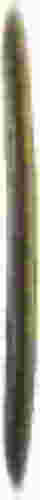

artist + perpetual student + pre-press apprentice + general nerd
located in melbourne, australia. teaching myself to build websites and use linux. been online since 2008 and obsessed with preserving old tech and aesthetics. this is just a place for me to show the stuff im working on, and talk about the things i enjoy!! please have a look around, im sure theres something to pique your interest :3
untitled dashboard project: a customizable dashboard that lives on your homescreen, for displaying the time, weather, emails, and calendar, as well as a window to type notes that will display on your homescreen at all times, and also sync directly into your obsidian vault daily note
this idea came from me desperately for a program that could run a sort of dashboard and could be used as an always on display for me at work, with the kinds of things i need to be checking a lot, but didn't want to be wasting time checking a million pages. turns out most programs to do this are for servers, or entire operating systems.
built on conky
peerchat: a terminal-based peer-to-peer chat platform (currently working on adtext-ding a voice-chat and versions for different operating systems)
peerchat is being programmed by cherry (cherrysofa.com) with my help for research and design!
raspberry pi pager: an idea cherry and i came up with when we we're talking about peerchat in it's early development
the concept behind the pager is is a small e-ink display with a slide out keyboard (you remember those phones in the weird flip-phone maximalism era where every company had a million insane phone designs? i miss that) with a few buttons programmed to send different messages and run different applications! it's a huge work in progress and we'll need to 3D print the casing for it probably but its a cool idea!

Created a CSS styling page and removed CSS from subpages.
added start gif background to homepage. new blog update.
set up the SSH key by myself (it wasnt hard at all).
Added a nav bar (with much struggle), changed the background,
changed border color, removed blog off home-page.
Added CSS styling to photography, digital art, and misc pages.
Started using Zed as a text editor and pushing to GitHub through it.
Working on fixing some bugs with GitHub
Began hosting site on GitHub!
Thank you to cherry and kyle for helping me set up the ssh
because that is a little above my paygrade
(im stupid).
Added an update log.